Hé lu bé bơ, I know this is not much, tại tự dưng có ý tưởng muốn làm cái gì đó tech tech tặng bơ nên thử thách bản thân học cấp tốc cách làm website trong mấy ngày nên pliz excuse it ((´д｀)) However, it DOES come from my earnest feelings towards you baby <3
 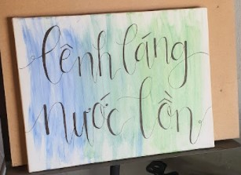
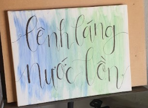
 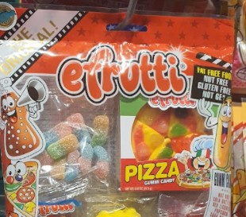
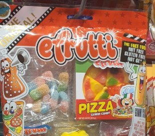
I know I was giving you a rough time at the beginning, sometimes I still do (｡•́︿•̀｡) and our shared moments are not exactly monumental in quantity, yet I find myself enjoy every second of them, even fond of being pampered when it comes to you. From the random rendezvous, the borrowed walks disguised as "exercising" just to spend a little more time together to the countless long talks about things that excite and disgust us, thoughts about you slowly get "instilled" in my head ₍՞◌′ᵕ‵ू◌₎♡ (come to think of it, really suspecting you're the intel Trung Cộng gài vào).
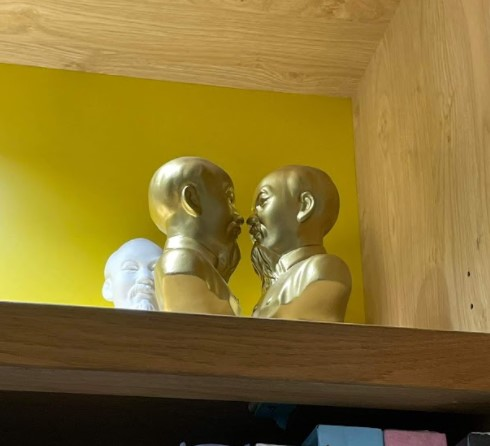 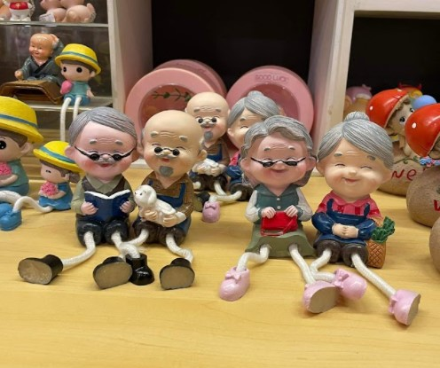

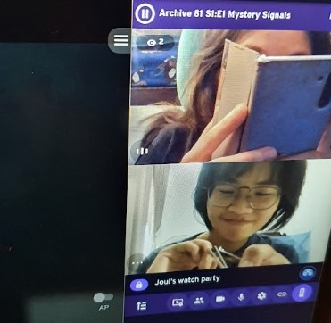


 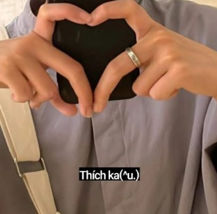
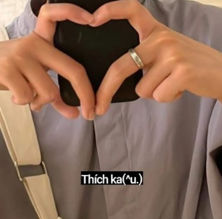
You're undoubtedly gorgeous, kind-hearted, passionate, self-driven, and bright, and you dare to say you're the only one who's lucky? (; ･`д･´) I know it's still too soon to tell anything, but I know my life feels more liberating because of your existence and I can't wait to accompany you through the many more things ahead of us.

 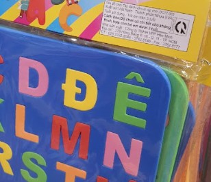
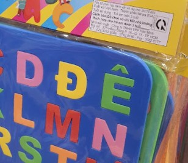
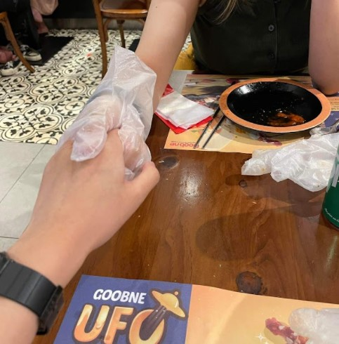 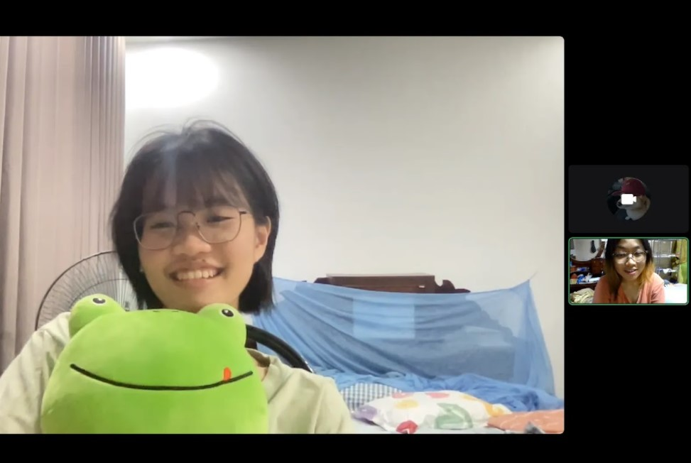
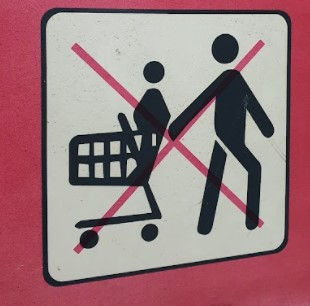 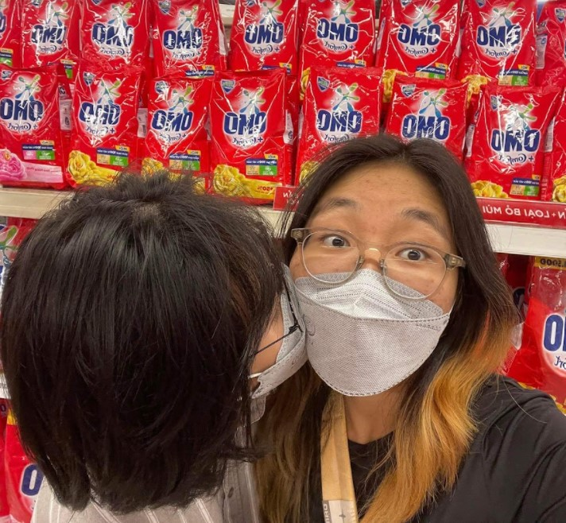 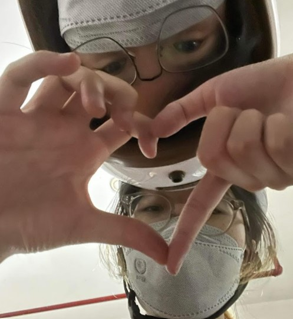
Chỉ muốn nói tới đây thôi, 'cuz I wanna save it for our hang-out later.
You do your best for today nghen bé bơ, I hope it will be gentle to you.(๑・ω-)～♥”
Thương em rất nhiều.
Bồ em, Quỳnh Giao (●♡∀♡)
P/S: Pliz check out BST Minh Luật ootd của mình ❣╰(⸝⸝⸝´꒳`⸝⸝⸝)╯❣
 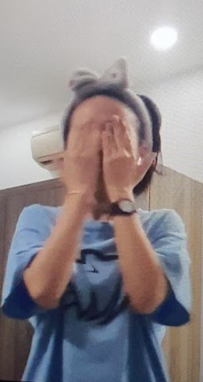
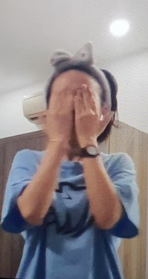
 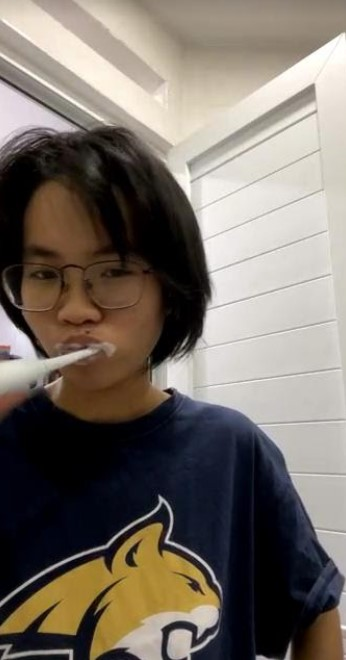
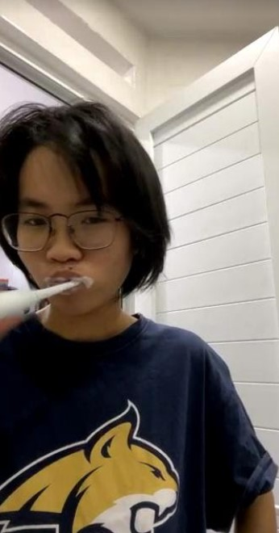

 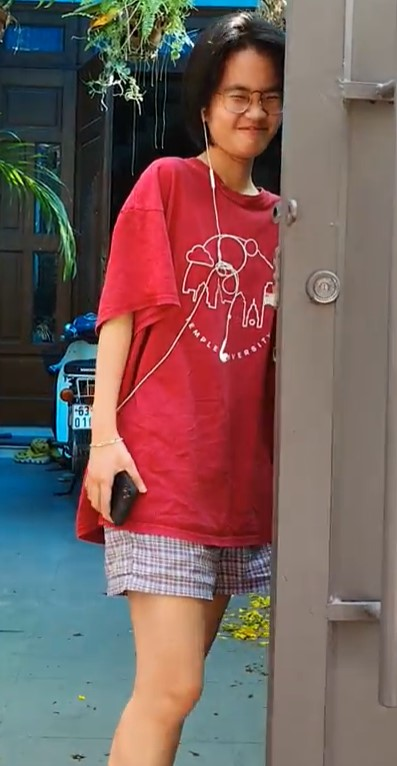
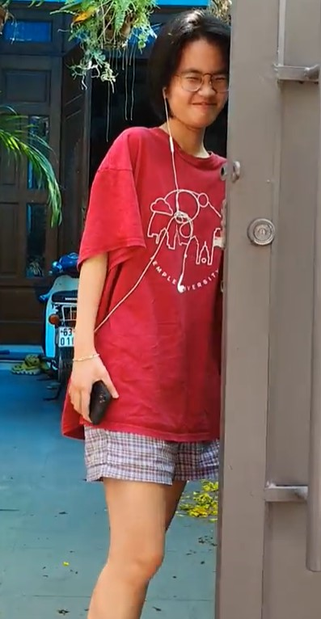